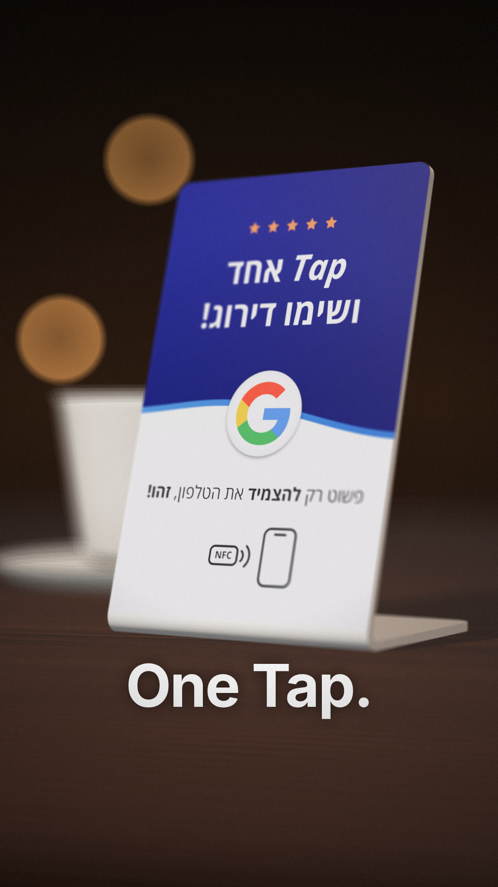
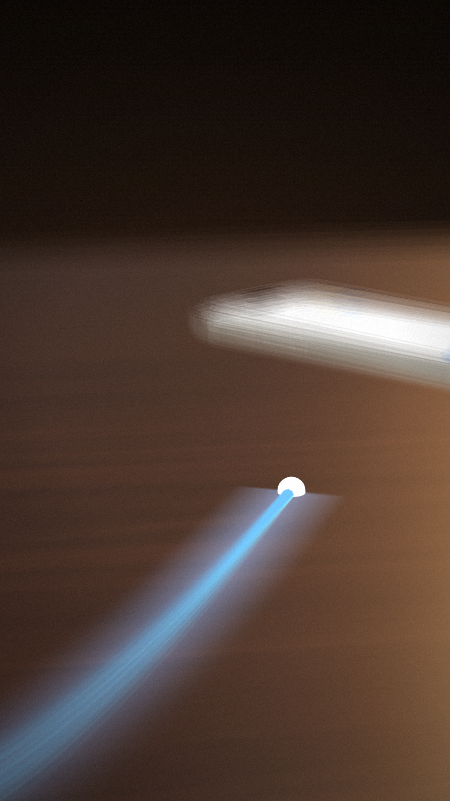
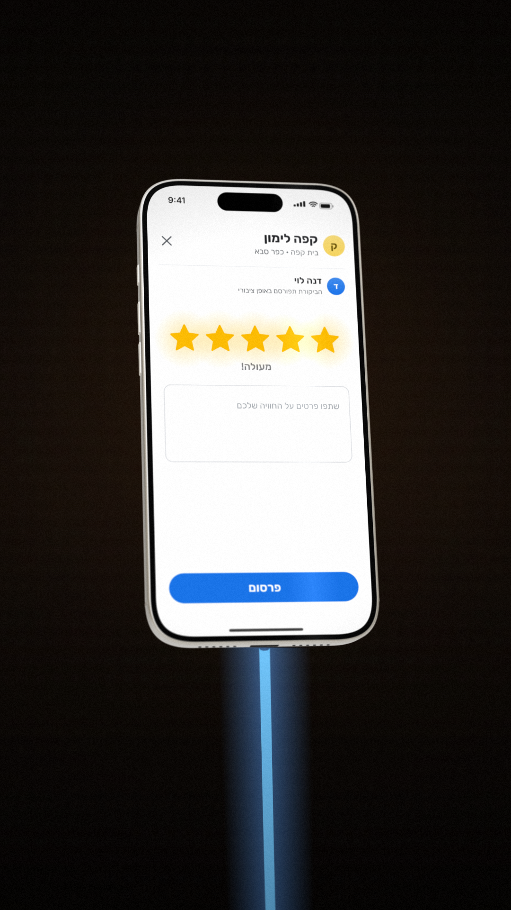
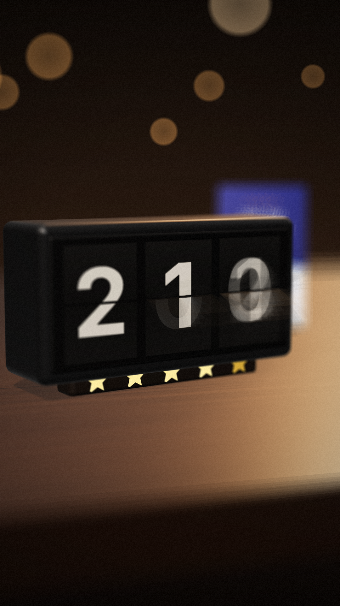
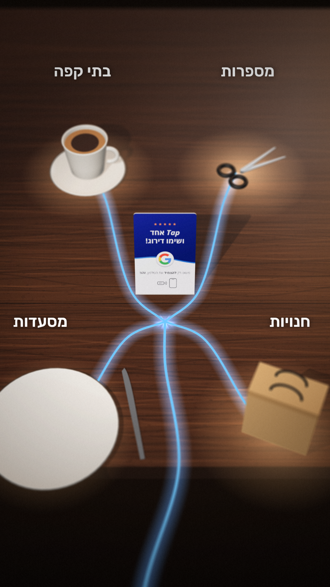
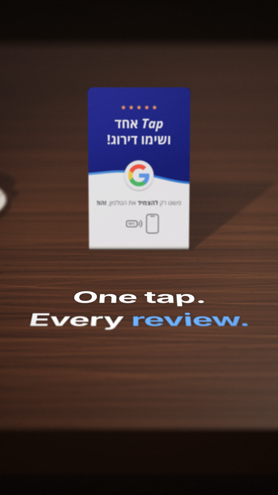
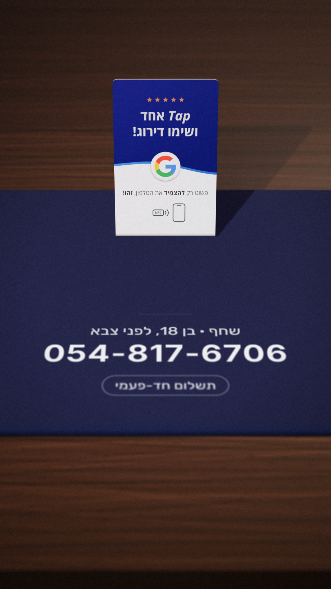

סקיצות — סרט מוצר בסגנון קולנועי
רינדור אמיתי של 7 מתוך 9 השוטים · 9:16 · 17 שניות

שוט 1 · 0:00–0:01
פתיחה: מאקרו על המעמד
דלפק אגוז כהה, אורות בית הקפה מטושטשים מאחור. המצלמה מתקרבת והפוקוס ננעל על ה-G.
One Tap.
עולה מלמטה.

שוט 2 · 0:01–0:02.5
האור יוצא לדרך
קו אור כחול יוצא מאייקון ה-
NFC
ודוהר על הדלפק. המצלמה רודפת אחריו נמוך, עם טשטוש תנועה, אל טלפון שמונח בקצה.

שוט 3 · 0:02.5–0:04
הטלפון מתעורר
הקו מתחבר לאייפון, שעולה מתוך החושך. על המסך דף הביקורת של גוגל, וחמשת הכוכבים מתמלאים אחד אחד.

שוט 5 · 0:05.5–0:07
מונה הביקורות
שעון דפדוף מכני מקפיץ את מספר הביקורות מ-38 ל-241, ומתחתיו נדלקות 5 מנורות כוכב בזהב.

שוט 7 · 0:09.5–0:11.5
לכל עסק
הקו עולה אל המעמד ומתפצל ל-4 ענפים. כל ענף מדליק עסק אחר: בתי קפה, מספרות, מסעדות וחנויות.

שוט 8 · 0:11.5–0:14
הסלוגן בתוך הסצנה
המילים
One tap. Every review.
מוקלדות אות אחרי אות על הדלפק, מול המעמד. המילה
review
בכחול.

שוט 9 · 0:14–0:17
סיום
המעמד על משטח לבד כחול כהה, והמצלמה מתקרבת לאט. מודפס על המשטח: שחף · בן 18, לפני צבא ·
054-817-6706
· תשלום חד-פעמי.
שוטים 4 ו-6
4 — הדירוג עולה על מסך הטלפון מ-3.2 ל-4.9
6 — הטלפון נוגע במעמד וגל אור כחול מתפשט על הדלפק
ייבנו אחרי האישור